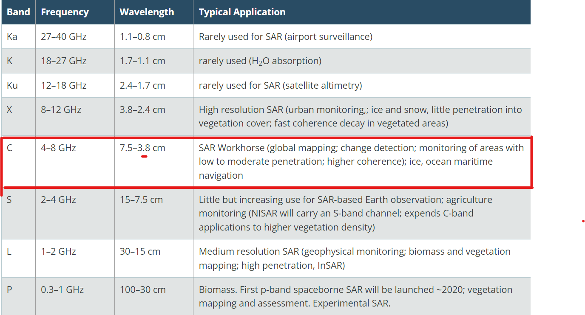
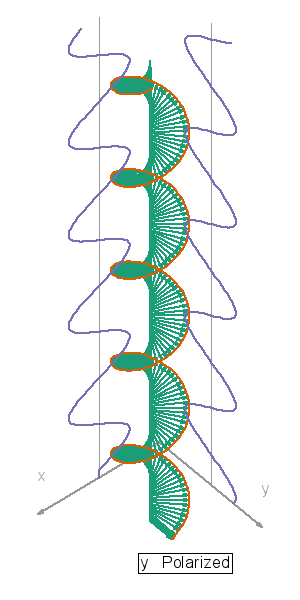

8 Synthetic Aperture Radar (SAR) Data
8.1 SUMMARY
Synthetic Aperture Radar (SAR) data
“SAR instruments send pulses of microwaves toward Earth’s surface and listen for the reflections of those waves. The radar waves can penetrate cloud cover, vegetation, and the dark of night to detect changes that might not show up in visible light imagery. When Earth’s crust moves due to an earthquake, when dry land is suddenly covered by flood water, or when buildings have been damaged or toppled, the amplitude and phase of radar wave reflections changes in those areas and indicates to the satellite that something on the ground has changed.”
It is an active sensor which means a sensor which provides their own illumination. For example it sees the world as the way bats do as they emit a chirp and listen to the backscatter of an echo if something gets reflected while passive sensor (optical) sees the world as our eyes or camera does.
Radar sensor picks up the signal reflected backscattered from the earth surface. They check the topology of the surface based on how it reflects.
Interpreting Radar Images
Regions of calm water and other smooth surfaces appear black, because the radar pulse reflects away from the spacecraft
Rough surfaces appear brighter, as they reflect the radar in all directions, and more of the energy is scattered back to the antenna.
Different wavelengths penetrates through different surfaces used in different applications. So choice of wavelenghth is important.

(Earth Science Data Systems 2020)
The most commonly used Band in imaging is C-band with 4-8 GHz frequency.
Polarization
Imaging radars have different polarization configurations. A single polarization transmits and receices a single polarization horizontal-horizontal (HH)or vertical-vertical(VV) imager while a dual-polarization system trnamit in one but receive in two HH and HV or VH and VV imagery.(zotero-287?)

Scattering
Different surface respond differently to the polarizations like bare earth is most sensitive to VV (rough scattering), leaves go cross VH or HV (volume scattering) and trees/buildings sensitive to HH (double bounce).

(Earth Science Data Systems 2020)
A SAR signal has both phase and amplitude data(backscatter). In GEE only amplitude data is available so if we want to use phase data we use SNAP.
SAR is used in tracking flooding. Area that is flooded appear darker. It is also used for blast damage assessment.
This weeks practical takes an example of Beirut explosion. In this case study we are developing our own change detection algorithm using pixel-wise t-test.
It is basically just a signal-to-noise ratio. So we have pre and post-event images and it calculates the difference between two sample means(signal) and divides it by the standard deviation of both samples(noise). The t-value is a measure of how many standard deviations the difference between the two mean is. We need to filter the image collection to the ascending and descending orbits, and then calculate the t-value for each orbit separately.(Ballinger 2024)

The visualization parameter corresponds the statistical significance of the change in pixel value. dark purple pixel indicate no significant change and yellow pixels indicates a significant change with 95% confidence.
8.2 APPLICATION
SAR data allow us to see through darkness, clouds detecting changes in habitat, level of water or moisture, natural or human disturbance in the earth surface. Therefore taking the example of above practical on battle damage assessment the study discusses the issues of using high resolution optical satellite imagery for getting the highest level of accuracy through Convolution Neural Networks (CNN). As it is financial and computationally expensive plus its not consistent to cloud cover. The advantage of open-access SAR mitigates these problems. It critically analyze (mueller2021?) approach on achieving 0.92 confidence score by training a CNN on damage annotations carried out by the United nations.
It analysed the war-related destruction resulting from the Syrian war. Despite the high accuracy, there are number if limitations like cost and cloud. Here we use open-access SAR imagery and pixel-wise T-Test which is a more generalized approach and can be calculated by simply taking the mean and variance of pre and post image over a period of time.(Ballinger 2023)
In the similar approach for detection of volcanic ground deformation we can use Sentinel-1 InSAR data. (Albino et al. 2022) paper focuses on 64 volcanic centres understanding ground deformation presenting a framework for real-time volcano monitoring and early warning system. Adiitionally if you generalize it the approach does not work for other regions due to geological differences and the paper has not discussed about validating the result.(Carn 1999)
8.3 REFLECTION
This week was mainly on SAR. Its advantages over optical and how it works was very useful to learn. Also the practical we learned this week on Beirut explosion was very interesting as it is using the very simple approach for validation of the model without using any machine learning techniques. As i was very curious to know and work on SAR imagery so it really help me understand the perspective and maybe in future I want to do such kind of research. As its the end of term 2 and this is my final entry. I just want to summarize my whole journey as very insightful as I learned so many new tools, read so many policies and got to know different methodologies and satellites.
I hope who ever reads my diary gets the gist of Remote Sensing and its applications.
Happy Reading !!